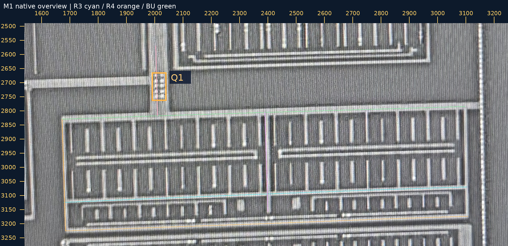
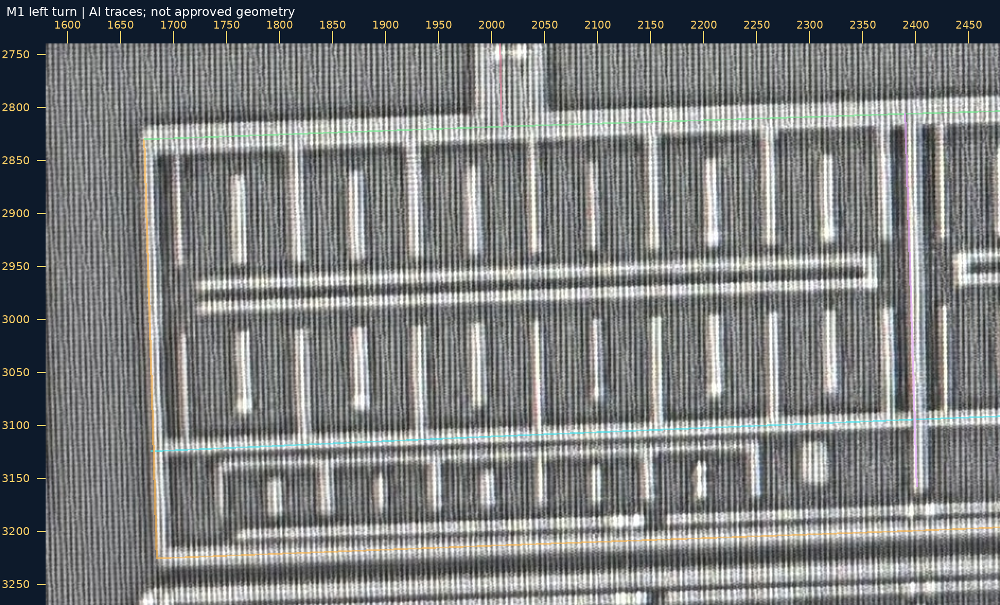
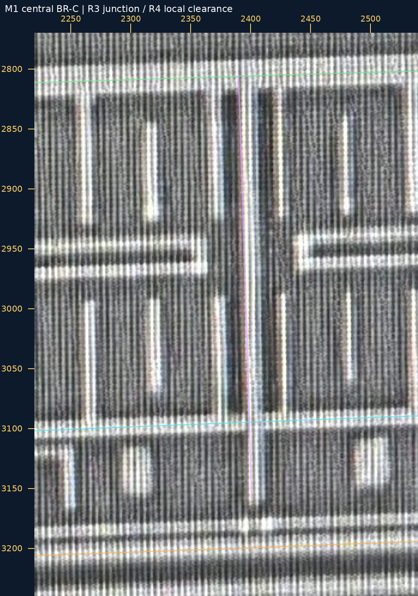
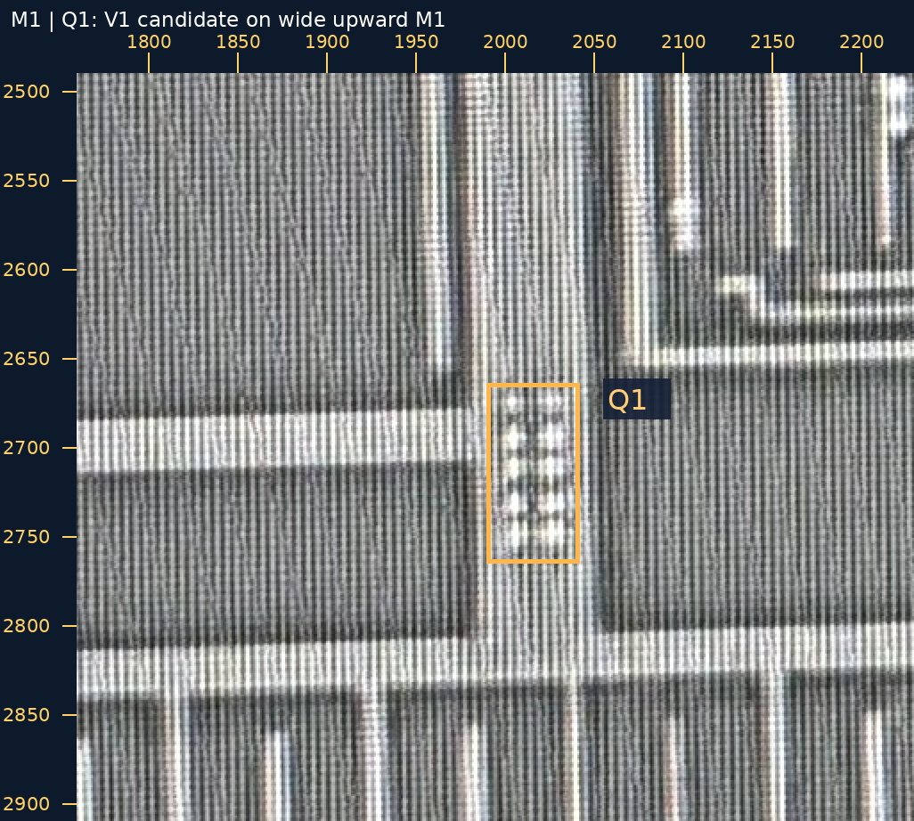
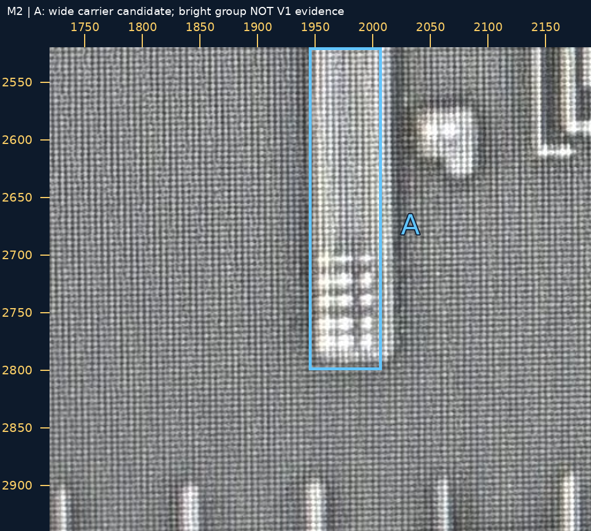

2026-10-29 · 来源核查包 · 工作几何仍接续 BR-R-return-work-v3
| 检查项 | 本次判断 | 状态 |
|---|---|---|
| R3 向左 | 宽横条可追到中央 BR-C 和左侧竖向返回。 | AI 来源候选；未采用精密几何 |
| R4 向左 | 底部宽横条左折，沿左侧返回向上接至 BU。 | AI 来源候选；未采用精密几何 |
| 中央 BR-C | 可见与 R3 接合；下端与 R4 本处仍有间隙。不能据此推导全局异网。 | AI 来源候选 |
| 下一阶段 | 沿 BU 继续查到向上的宽 M1 及 Q1 孔组，并找到 M2 宽竖段 A。 | 新 V1 身份／承载待人审 |
细邻线、其余短指、所有支路的孔与完整网络没有随本次核查获得批准。R3／R4 原图是有畸变的来源，彩线仅是追踪定位；不作为新的规则几何，不移动原工作候选和孔中心。
M1 图中橙框 Q1 的孔组，是否为 V1，并把 BU 向上的宽 M1 接到 M2 图中蓝框 A 的宽竖向 M2？仅判断这处身份与承载，不裁决孔数；M2 本身可见亮点不作为 V1 证据。
可回复：“Q1：是 V1，接 A”，或指出身份／承载需改处。孔数继续未知；M2 图中自己的孔组属于另一项上层接口候选，本次不求裁决。
需要你介入的原因：这是此前未批准的新接口，会改变跨层连接；宽段位置可由宏观参照定位，但宏观定位不能代替孔的身份与真实承载。原 P1–P5、BF24／25／26、A／B 不再复审。
两层原图大邻域并排图原生范围 [1540, 2490, 3250, 3280]；整数放大 1×；坐标尺为本层照片像素。
原图 · 大图
原生范围 [1580, 2740, 2480, 3270]；整数放大 2×；坐标尺为本层照片像素。
原图 · 大图
原生范围 [2220, 2770, 2540, 3240]；整数放大 3×；坐标尺为本层照片像素。
原图 · 大图
原生范围 [1760, 2490, 2230, 2910]；整数放大 2×；坐标尺为本层照片像素。
原图 · 大图
原生范围 [1720, 2520, 2190, 2940]；整数放大 2×；坐标尺为本层照片像素。
原图 · 大图